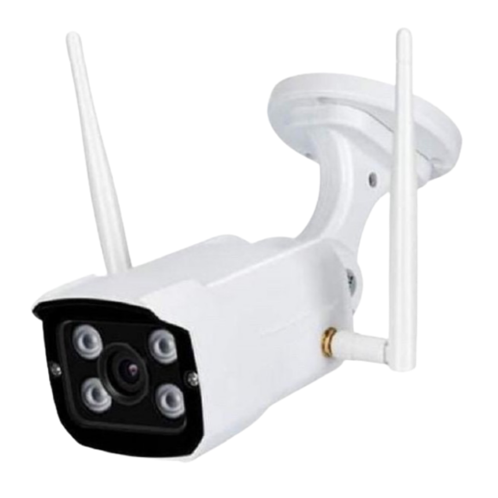
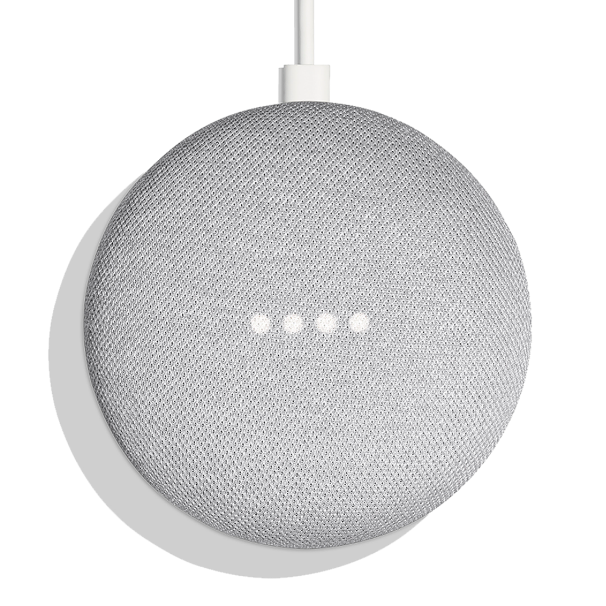

BOHLAM PUTIH/KUNING
Rp. 10.000/Bln
Bohlam pintar yang bisa dimati-nyalakan, diubah putih ke kuning dan di atur kecerahannya melalui aplikasi selama terkoneksi wifi/hotspot.
Bohlam ini memiliki kecerahan maximal di 810 lumens dan bisa di redupkan hingga 80 lumens, dapat diatur gradasi warna putih dari 2700k (warm white) hingga 6500k (cool white).
Bohlam ini sangat mudah di pasang, tinggal di putar kepada ulir E27, fitting lampu paling umum di Indonesia.
BOHLAM RGB
Rp. 17.000/Bln
Bohlam pintar yang bisa dimati-nyalakan, diubah warna dan diatur kecerahan melalui aplikasi selama terkoneksi wifi/hotspot.
Lampu ini memiliki kecerahan maximal di 1110 lumens dan bisa di redupkan hingga 110 lumens, kombinasi warna RGB hingga 16 juta warna dan gradasi putih dari 2700k (warm white) hingga 6500k (cool white).
Bohlam ini sangat mudah di pasang, tinggal di putar kepada ulir E27, fitting lampu paling umum di Indonesia.
CCTV INDOOR
Rp. 40.000/Bln
Smart indoor PTZ Camera adalah kamera pintar yang dapat menyalurkan video berikut suara kepada smartphone dan suara dari smartphone.
Smart indoor PTZ Camera memiliki slot sd card max 128GB (tidak termasuk) dan dapat memberi notifikasi bila ada yang lewat pada jam yang di tentukan dalam aplikasi. Pada posisi gelap akan otomatis switch ke night vision.
Kamera ini hanya perlu untuk di Sambungkan ke sumber listrik, jangan lupa download applikasi dan disambungkan dengan koneksi WIFI 2.4Ghz untuk dapat berfungsi dengan ideal, dapat di posisikan terbalik dan menempel pada plafon, dengan orientasi video dalam aplikasi bisa di putar 360° untuk fitur pan dan tilt 60° lebih luas dan bebas dalam melakukan pengawasan.
CCTV OUTDOOR
Rp. 45.000/Bln
Smart outdoor Static IP Camera adalah kamera pintar yang dapat menyalurkan video dan suara lewat smartphone.
Smart outdoor Static IP Camera memiliki slot SD Card max 128GB (tidak termasuk) dan dapat memberi notifikasi bila ada yang lewat pada jam yang di tentukan dalam aplikasi. Pada posisi gelap, maka akan otomatis switch ke night vision.
Kamera ini hanya hanya perlu untuk disambungkan ke sumber listrik. Jangan lupa download aplikasi dan disambungkan dengan koneksi WIFI 2.4Ghz untuk dapat berfungsi dengan ideal. Dapat diposisikan menggantung dari plafon maupun di pasang pada tembok dengan orientasi video dalam aplikasi bisa di putar 180° sesuai penempatan.

CCTV INDOOR
Rp. 30.000/Bln
Kamera pintar yang dapat menyalurkan video dan audio kepada smartphone dan suara dari smartphone ke kamera
- Auto tracking / face detection: camera bs di set Gerak otomatis ikuti Objek.
- Putar horizontal 360, vertikal 90 derajat.
- Cloud service gratis.
- Hapus dan timpa otomatis dgn rekaman baru.
- Penglihatan malam.
- Bisa tentukan sensor gerak hanya di area tertentu saja.

CCTV OUTDOOR
Rp. 42.000/Unit
Kamera pintar yang dapat menyalurkan video dan audio kepada smartphone dan suara dari smartphone ke kamera
Kamera ini hanya hanya perlu untuk disambungkan ke sumber listrik. Jangan lupa download aplikasi dan disambungkan dengan koneksi WIFI 2.4Ghz untuk dapat berfungsi dengan ideal. Dapat diposisikan menggantung dari plafon maupun di pasang pada tembok dengan orientasi video dalam aplikasi bisa di putar 180° sesuai penempatan.
SMART BREAKER ON OFF
Rp. 13.000/Bln
Mini circuit breaker (MCB) yang bisa dimati-nyalakan melalui aplikasi. Dengan breaker ini, segala perangkat dengan daya listrik 220v dapat diputus-sambung arus sesuai keinginan.
Memiliki fitur pengaturan reset status yaitu apa yang akan terjadi jika input listrik ke breaker mati lalu nyala lagi, bisa diatur jadi nyala atau mati, bahkan ada pilihan untuk jadi status terakhir.
Breaker ini disarankan hanya dipasang oleh teknisi ahli kelistrikan karena perlu putus sambung kabel.

GOOGLE NEST MINI
Rp. 70.000/Bln
Google Home mini ini dapat beroperasi dengan dukungan fungsi Google Assistant yang mampu memberikan Anda kemudahan dalam beraktivitas di rumah mirip dengan Google Home.
Anda dapat mengatur semua kegiatan dengan integrasi sistem Google yang mampu memberikan Anda informasi mengenai cuaca, pengingat waktu pertemuan dengan klien di kantor, hingga mengendalikan fungsi perangkat Chromecast.
Hanya dengan menggunakan kendali suara, Anda dapat 'bertanya' untuk mengatur berbagai aktivitas pada waktu yang bersamaan.
IR REMOTE
Rp. 15.000/Bln
Pemancar infrared pintar yang bisa di kendalikan melalui aplikasi selama ada wifi/hotspot.
Remot ini dapat menggantikan semua remot infrared dengan mayoritas sudah ada dalam daftar dan bila tidak ada, bisa di duplikat signal infrared dari remot lama ke dalam aplikasi.
Dengan sudut pemancaran di 360 derajat dan jarak hingga 10m, remot ir dapat mengendalikan banyak perangkat yang dalam garis pandang karena signal infrared tidak dapat tembus halangan.

SMART PLUG PORTABLE
Rp. 17.000/Bln
Smart Portable Plug adalah steker pintar yang bisa dimati-nyalakan melalui aplikasi. Dengan plug ini, segala perangkat dengan daya listrik 220v dapat diputus-sambung arus sesuai keinginan.
Memiliki fitur pemantauan pemakaian listrik dengan kapasitas maximum 16 Ampere. Plug ini juga memiliki keamanan maksimal dengan child safety agar anak tidak dapat menusuk masuk soket dan lengkap dengan fitur grounding standard Eropa.
Sangat mudah dipasang, tinggal dihubungkan ke soket EU yang paling umum di Indonesia dan ukuran plug yang minimalis memastikan posisi lubang lain tidak akan terhalang.
POWER EXTENSION
Rp. 37.000/Bln
Stop kontak extension pintar yang dapat dimatikan/dihidupkan melalui aplikasi.
Dengan Power Extension ini, segala perangkat dengan daya listrik 220V dan 5V dapat di putus sambung arus sesuai keinginan.
Power Extension memiliki 4 EU Socket 220V dengan max total 10A serta 3 USB Socket 5V dengan daya 2.1A. Power Extension sangat mudah dipasang, tinggal hubungkan catu daya yang paling umum di Indonesia dan tiap EU Socket 220V nya dapat dimatikan/dihidupkan secara individu melalui aplikasi.
WALL SWITCH 1 GANG
Rp. 20.000/Bln
Saklar pintar yang bisa dimati-nyalakan melalui aplikasi dan melalui sentuhan.
Saklar ini 1 gang dan memiliki pilihan warna putih dan hitam.
Memiliki kapitas maksimum 800w per gang. Saklar ini memiliki tampilan yang sangat modern dengan surface touch kaca.
DOOR SENSOR
Rp. 15.000/Bln
Alat keamanan yang sangat mudah dipasangkan di pintu atau di jendela. Dengan fitur Push Instant Notification, Anda akan menerima notifikasi pada aplikasi, apabila sensor mendeteksi pintu atau jendela terbuka maupun tertutup.
Dengan Fitur Log Record membuat Anda tahu kondisi pintu/jendela terbuka dan tertutup kapanpun dan dimanapun. Ditambah Fitur Battery Indication membuat Anda tidak khawatir bilamana Door Sensor kehabisan daya, karena Anda akan mendapatkan notifikasi untuk penggantian baterai.
Adanya Fitur Push Instant Notification, Anda akan langsung mendapatkan notifikasi melalui handphone saat pintu/kaca terbuka atau tertutup. Lock/Unlock Record, membuat semua aktifitas akan terdaftar di dalam aplikasi dan anda dapat mengakses kapanpun.
SIREN ALARM WIFI
Rp. 25.000/Bln
Dengan situasi yang tidak menentu WIFI Siren Alarm bisa menjadi salah satu opsi untuk keamanan rumah anda.
Dengan dukungan speaker kencang dapat mengeluarkan sekitar 90db suara dan juga dilengkapi 10 jenis suara alarm yang dapat di pilih sesuai dengan pilihan anda membuat kepercayaan diri anda mengenai kemanan rumah anda semakin meningkat.
Disertakan juga fitur battery sebagai opsi tambahan selain daya melalui soket usb membuat kemanan anda terjaga bilamana dalam kondisi mati daya/lampu di lokasi anda, keamanan tidak terganggu karena battery akan sementara mendayai alarm. dukungan WIFI 2.4 GHz memudahkan ada dalam menyambungkan perangkat dengan aplikasi di handphone anda.
PIR SENSOR
Rp. 20.000/Bln
PIR Motion Sensor adalah perangkat sensor untuk mendeteksi adanya gerakan dan memberikan notifikasi ke aplikasi atau memicu otomasi yang dapat diatur di aplikasi.
PIR Motion Sensor memiliki bentuk kecil namun mempunyai kemampuan yang mumpuni, sebut saja daya tangkap hingga 10meter, dengan sudut hingga 128 derajat ke semua sisi, sangat ideal bagi sistem canggih IoT di rumah Anda.
PIR Motion sensor dapat dihubungkan dengan Siren Alarm maupun perangkat apa saja melalui otomasi yang dapat di custom pada aplikasi.
SMOKE SENSOR
Rp. 33.000/Bln
Smart Smoke Detector akan mengeluarkan bunyi alarm dan memberikan notifikasi ke smartphone jikalau ia mendeteksi asap.